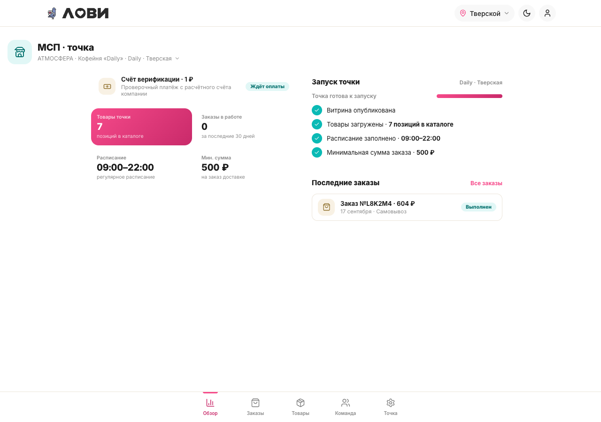
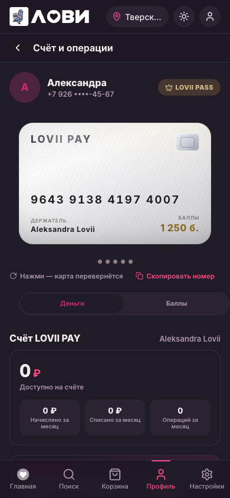

SZ-062 · фаза 3 · транш 1 применён и проверен
Оптимизация CSS: что уже сделано
Гейт №1 пройден, правки начаты. Первый транш — navbar-фикс, удаление мёртвого CSS и безопасная токенизация — применён к css/lovii.css и проверен на локальном стенде. Ниже результат и материал для Гейта №2.
01Что применено
| # | Изменение | Объём | Визуальный эффект |
|---|---|---|---|
| 1 | Navbar-фикс: --lv-navbar-height: 64px | 1 объявление | +8px нижний отступ на экранах с таббаром (утверждено) |
| 2 | Удаление мёртвого CSS (38 классов, с составными селекторами) | 59 правил, −119 строк | нет |
| 3 | Токенизация theme-стабильных цветов | 35 вхождений hex → var(--lv-*) | нет |
| 4 | Бамп кэша ?v=53 → 54 | 1 строка | нет |
3915→3796
строк lovii.css
59
правил удалено
52→42
hex вне токенов
0
ошибок рантайма
0
регрессий вне navbar
02Верификация
| Проверка | Результат |
|---|---|
node --check (18 js + sw.js) | 0 ошибок |
Коллизии (lv_collisions.py) | 0 фатальных |
| Рантайм: 22 роута × 390/768/1280 × светлая/тёмная | 0 ошибок консоли · 0 переполнений · 0 SVG 0×0 |
| Скриншот-регрессия «до/после» (4 кадра) | 3 из 4 — 0 отличий; msp — только navbar (ожидаемо) |
Урок методики. Наивная токенизация по значению ломает тёмную тему:
--lv-page, --lv-ink, --lv-dim, --lv-gold-text инвертируются под [data-theme="dark"], а исходные hex были фиксированными. Первый прогон дал регрессию кошелька в тёмной теме (10.5% пикселей). Правило: hex можно менять только на theme-стабильный токен, иначе это правка визуала и она идёт через таблицу правок.
03Кадры «до / после»



04Материал для Гейта №2
42 hex остались вне токенов — нужны новые (Гейт №2). Группы: 25 нейтральных (
#fff ×22, #fff…, серые), 12 тёплых (золото-тинты, розовые тинты), 3 teal, 2 холодных. Предлагаю завести шкалу нейтральных + семантические токены (danger, info, tint-*).
Шкала иконок. Замер показал разброс 10, 12, 13, 14, 16, 17, 18, 20, 22, 24, 32, 70 px — шкалы нет. Предложение:
16/20/24/32, но фактические базовые — 16 и 18. Нужно ваше решение по шкале, после чего проставлю явный размер всем вызовам.
05Дальше
Транш 2 фазы 3 — слияние 103 повторных селекторов и дублей медиа, декомпозиция по слоям tokens→base→primitives→components→utilities. Затем Гейт №2 (токены + шкала иконок), модуль иконок в lovii-design, фаза 4 (ДС), фаза 5 (валидация).